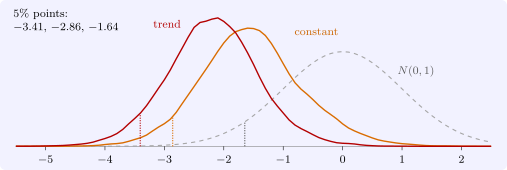

12.3 Unit root tests
The Dickey–Fuller test is applied to the regression in differences, \[ \Delta Y_t = \gamma Y_{t-1} + u_t, \qquad \gamma = \rho - 1, \] testing \(H_0\colon \gamma = 0\) (unit root) against \(H_1\colon \gamma < 0\) (stationary). The \(t\) ratio of \(\gamma \) is the \(\tau \) of Theorem 12.2.4. Real series need deterministic terms, and the test is run in one of three forms: \begin {align*} \text {none:}\quad &\Delta Y_t = \gamma Y_{t-1} + u_t,\\ \text {constant:}\quad &\Delta Y_t = \mu + \gamma Y_{t-1} + u_t,\\ \text {trend:}\quad &\Delta Y_t = \mu + \beta t + \gamma Y_{t-1} + u_t . \end {align*}
Including deterministic terms changes the limiting distribution, because the Brownian motion in Theorem 12.2.4 is replaced by its demeaned or detrended version, and the critical values move further left. The asymptotic critical values, from Fuller (1976) and MacKinnon (1991), are:
| \(1\%\) | \(5\%\) | \(10\%\) | |
| none | \(-2.58\) | \(-1.95\) | \(-1.62\) |
| constant | \(-3.43\) | \(-2.86\) | \(-2.57\) |
| trend | \(-3.96\) | \(-3.41\) | \(-3.12\) |
| \(N(0, 1)\), for comparison | \(-2.33\) | \(-1.64\) | \(-1.28\) |
The choice of form follows from the alternative. For a trending series such as output or prices, the relevant alternative is trend-stationarity, and the trend form must be used; testing such a series without a trend compares a random walk with drift against a stationary series with no trend, and the test has no power. For a series with no trend, such as an interest rate or a real exchange rate, the constant form is appropriate. The “none” form is rarely appropriate for data, but it is the right one for residuals that already have mean zero.

The augmented test
If \(\Delta Y_t\) is autocorrelated, the Dickey–Fuller regression has autocorrelated disturbances and its distribution changes. The remedy is to add lagged differences, which the next theorem justifies.
Theorem 12.3.1. The AR(\(p\)) model \(Y_t = \mu + \phi _1Y_{t-1} + \dots + \phi _pY_{t-p} + u_t\) can be written \[ \Delta Y_t = \mu + \gamma Y_{t-1} + \sum _{j=1}^{p-1}\delta _j\Delta Y_{t-j} + u_t, \qquad \gamma = \sum _{i=1}^p\phi _i - 1, \qquad \delta _j = -\sum _{i=j+1}^p\phi _i . \] The AR polynomial \(\phi (z) = 1 - \phi _1z - \dots - \phi _pz^p\) has a unit root, \(\phi (1) = 0\), if and only if \(\gamma = 0\).
Proof. Substitute \(Y_{t-1} = Y_{t-1}\) and, for \(j \geq 2\), \(Y_{t-j} = Y_{t-1} - \Delta Y_{t-1} - \dots - \Delta Y_{t-j+1}\) into the AR(\(p\)) equation. The coefficient of \(Y_{t-1}\) collects \(\phi _1 + \dots + \phi _p\), and the coefficient of \(\Delta Y_{t-j}\) collects \(-\phi _i\) from every \(Y_{t-i}\) with \(i > j\). Subtracting \(Y_{t-1}\) from both sides gives the stated form. Finally \(\phi (1) = 1 - \sum \phi _i = -\gamma \). □
The augmented Dickey–Fuller (ADF) test uses the \(t\) ratio of \(\gamma \) in this regression, with the same critical values as the simple test: Said and Dickey (1984) showed that, with enough lags, the lagged differences absorb the short-run dynamics and leave the limit of Theorem 12.2.4 unchanged. The number of lags is chosen by an information criterion or by testing down from a generous maximum; too few lags distort the size, too many reduce the power.
Low power
The most serious practical weakness of unit root tests is their power against stationary alternatives close to one. Simulation with \(5000\) replications of the stationary scheme \(Y_t = 0.05 + 0.95Y_{t-1} + u_t\) met in Section 4.5, using the constant form at the \(5\%\) level, gives these rejection rates:
| \(n\) | \(50\) | \(100\) | \(200\) | \(400\) |
| \(\rho = 0.95\) | \(0.08\) | \(0.13\) | \(0.33\) | \(0.87\) |
| \(\rho = 0.90\) | \(0.14\) | \(0.34\) | \(0.88\) | \(1.00\) |
With \(25\) years of quarterly data (\(n = 100\)), a stationary series with \(\rho = 0.95\) is declared to have a unit root seven times out of eight. Failure to reject is weak evidence. Two responses are common. The KPSS test of Kwiatkowski, Phillips, Schmidt and Shin (1992) reverses the null, taking stationarity as the hypothesis; if KPSS rejects and ADF does not, the evidence for a unit root is stronger. And Perron (1989) showed that a stationary series with a single break in its trend, such as the 1973 oil shock, looks like a random walk to the Dickey–Fuller test; tests allowing for breaks are then needed. In applied work it is common to report the evidence from several tests and to proceed on the assumption that is most consistent with it and with economic reasoning.
Questions on this section
Stuck on something here? Ask below and it stays attached to this topic.